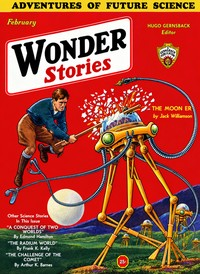

A Conquest of Two Worlds

Kapitel 1
Jimmy Crane, Mart Halkett and Hall Burnham were students together in a New York technical school in the spring of 1962 when Gillen's flight changed the world. Crane, Halkett and Burnham had been an inseparable trio since boyhood. They had fought youthful foes together, had wrestled together with their lessons, and now read together, as an amazed world was reading, of Ross Gillen's stupendous exploit.
Gillen, the stubby, shy and spectacled Arizona scientist, burst the thing on the world like a bombshell. For sixteen years he had worked on the problem of atomic power. When he finally solved that problem and found himself able to extract almost unlimited power from small amounts of matter, by breaking down its atoms with a simple projector of electrical forces of terrific voltage, Gillen called in a helper, Anson Drake. With Drake he constructed an atom-blast mechanism that would shoot forth as a rocket stream, exploded atoms of immeasurable force, a tremendous means of propulsion.
Drake's expedition proved a classic in disaster. Two of his ten rockets perished in mid-space in a meteor swarm. Many of the men in the other rockets were struck down by the malign combination of the weightlessness, the unsoftened ultra-violet rays, and the terrific glare and gloom of mid-space. This space-sickness had put about a half of Drake's men out of usefulness, Halkett and Burnham among them, when his eight rockets swung in to land near the Martian equator.
One of Drake's rockets smashed completely in landing, and three others suffered minor damages. They had landed near one of the oases of vegetation, and Drake directed the establishment of a camp. The thin cold Martian air helped bring his space-sick men back to normal, but others were being smitten at the same time by what came to be known later as Martian fever. This seized on Hall Burnham among others, though Halkett and Crane never had it. The fever came as the result of the entirely strange conditions in which the earthmen found themselves.
Drake's men were in a world in which nothing could be measured by terrestrial standards. The reduced gravitation made their slightest movements give grotesquely disproportionate results. But the thin air made even the slightest effort tire them quickly. The sun's heat was enough by day to give moderate warmth, but the nights in Drake's camp were freezing. Halkett, Crane and Burnham marveled at the splendor of those bitter nights, the stars superb in frosty brilliance, the two Martian moons casting ever-changing shadows.
Then, too, there were the Martians. The first contact of Drake's party with them was amicable enough. The big, furry man-like beings, strange looking to the earthmen with their huge expanded chests and stilt-like limbs, emerged from the vegetation oases to greet Drake's men as friends. News of Gillen's visit had traveled over part of Mars, at least, for these Martians had heard of it.
Drake welcomed the Martians and ordered his men to fraternize with them, for he hoped to learn much from them concerning the planet's resources. He was beginning to see that his expedition was far too small for even the sketchiest exploration of the planet. So Martians and earthmen mixed and mingled in the little camp at the oasis' edge. Some of the men learned the rudiments of the Martians' speech--Mart Halkett was one of these--and got from them a little information concerning location of mineral deposits. Although most of it was undependable, still Drake felt he was learning something.
But the whole state of affairs changed when one of Drake's men foolishly told some Martians that Drake's expedition was but the forerunner of many others from earth, and that the Interplanetary Council would direct the destinies of all the planets. It must have been a shock to the Martians, primitive as they were, to find that they were considered subjects of this new government. They withdrew at once from the earthmen's camp. Drake radioed to earth that they were acting queerly and that he feared an attack.
Kapitel 2
Halkett commented on that. "I don't know why we should be going back there to kill those poor furry devils," he told Crane and Burnham. "After all, they're fighting for their world."
"We wouldn't hurt them if they'd be reasonable and not attack us, would we?" Crane demanded. "We're only trying to make of Mars something beside a great useless desert."
"But the Martians seem to be satisfied with it as a desert," Halkett persisted. "What right have we, really, to change it or exploit its resources against their wishes?"
Kapitel 3
But trouble came soon after Halkett's arrival, with the Jovians. Crane had been engaged in strengthening his dozen posts scattered over the southern half of Jupiter. He had not tried to establish any forts in North Jupiter, realizing the insufficiency of his resources, for even the dozen on the huge planet's southern half were separated by tremendous distances. Rocket communication between them was fairly quick but Crane preferred to strengthen the twelve forts before establishing more.
Kapitel 4
Rocket fleets arrived ceaselessly, pouring men and materials into South Jupiter from earth and Mars. The recruiting offices on earth were working night and day. Crane took the men they sent and mixed them with his veterans, drilled them, trained them in Jovian fighting, made disciplined armies of them. He concentrated men and materials at the equatorial posts.
For Crane was going to follow a different plan in North Jupiter. Instead of establishing a network of posts as on Mars and South Jupiter, he was going to encircle Jupiter with a thin band of earth forces and then push that band northward toward the pole. His circle, Crane saw, would grow smaller and stronger the farther north it pushed, and would drive the Jovians in North Jupiter onward until those not slain were hemmed in in the warm north polar region.
It took two years of preparation before Crane deemed his forces sufficient. Neither he nor Burnham had in that time heard anything of Halkett, nor had anyone else. Burnham thought that Halkett must be dead. But both had other things enough to think of when Crane began the long-planned campaign. With his forces encircling the equator of the planet, he ordered an advance. The band around the planet began to crawl north.